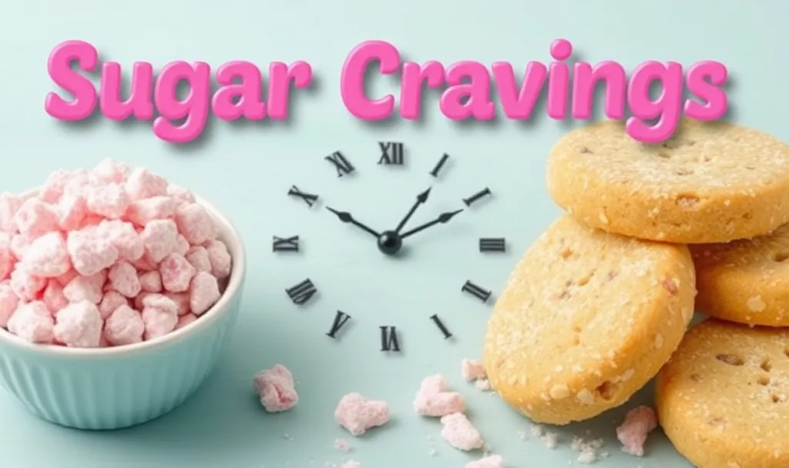

Navigating life.
Because some journeys no one prepares you for.
Honest, science-backed guidance for perimenopause, menopause, fertility over 40, anxiety and wellbeing. From a women's health scientist who had to work it out herself.
- Free
- Science-backed
- Written from experience

What's going on for you right now?
Pick a topic for the plain-English overview, what helps, and every article on it.

It started earlier than I thought
Symptoms, the science, and getting your GP to listen.

Not an ending
HRT, testosterone, bones, heart and skin.

Trying, later
The questions to ask and what the evidence supports.

Calmer, stronger, more you
Anxiety explained, plus movement, breath and nutrition that help.

Finding your way through
The NZ process, explained plainly, and where to get support.

Browse all articles
Sleep, brain fog, nutrition, supplements and more.
Real information. No fluff.

I'm Rubbing My Oestrogen Gel on My Achilles. Here's What the Science Says
Two weeks of trialling it on a stubborn Achilles, plus what the research on HRT and joints actually shows.
Read article →
The Menopause Face Cream I Now Buy Myself
I nearly gave up on it because of the scent. Now it's my favourite two minutes of the morning.
Read article →
The 2pm Sugar Crash: Why Perimenopause Hijacks Your Blood Sugar
It's not a willpower problem. It's a cortisol and oestrogen problem — and once you understand that, everything changes.
Read article →
Brain Fog & Sleep: What's Actually Going On — and What Can Help
I was desperate, so here's the facts. The science, the supplements, and what actually moves the needle.
Read article →
Why Can't I Sleep? Perimenopause, Insomnia & What Actually Works
Lying awake with a brain that won't switch off. What's happening, what actually helps, and what I built when nothing else was good enough.
Read article →
Perimenopause Starts Earlier Than You Think — And NZ Women Are Being Missed
Three doctors. All women. Not one said the word. What I learned after I worked it out myself.
Read article →What I'm trying over the next few weeks
I try things myself before I write about them. Here's what's on the list, with honest write-ups to follow.
A breathwork workshop
Slow, structured breathing is one of the quickest ways to settle a wired nervous system. What the workshop involved, and the techniques worth keeping.
Anxiety, stress & wellbeing → Coming up next · WellbeingThe Red Room
My first visit, and what I made of it.
Anxiety, stress & wellbeing → Coming up next · StrengthLes Mills BODYBALANCE & BODYPUMP
Yoga-meets-Pilates for calm, and strength training to music. Resistance training has some of the best evidence for midlife mood, so I'm putting it to the test.
Anxiety, stress & wellbeing →What should Sarah and the VelaOra team review next?
A product, a class, a supplement, a symptom. One word is enough and we'll look into it.
No email needed.
How to walk into your GP appointment and actually get heard
Three doctors never said the word "perimenopause" to me. This is the guide I wish I'd had: practical, NZ-specific, and quick to read before your appointment.
- What to track in the weeks before
- The exact phrases that get taken seriously
- What to ask for, and what a "normal" blood test does and doesn't mean
- What to do if you're dismissed
You'll see the guide straight away. No spam, ever.

"I built the resource I wish I'd had. Science-backed where it matters, human always."
I'm Sarah, a scientist with more than 25 years in women's health. In my mid-forties I had no idea my itchy ears, 3am wake-ups and out-of-nowhere anxiety were connected. VelaOra is everything I learned, written for NZ and Australian women.